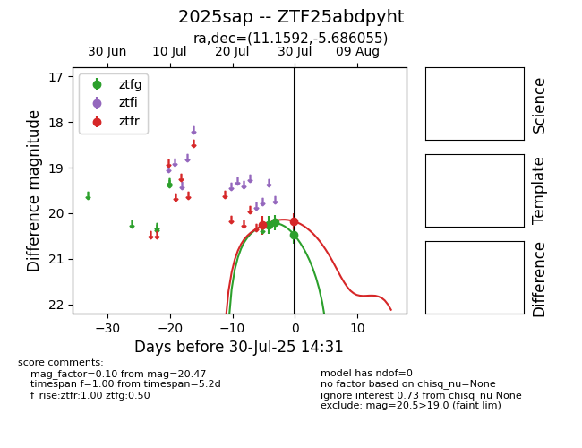

Target 2025sap at 2025-07-30 14:31, see:
FINK: fink-portal.org/2025sap
Lasair: lasair-ztf.lsst.ac.uk/objects/2025sap
ALeRCE: alerce.online/object/2025sap
TNS: wis-tns.org/object/2025sap
YSE: ziggy.ucolick.org/yse/transient_detail/2025sap
alt names
ZTF25abdpyht (ztf,fink)
2025sap (tns,yse)
coordinates:
equatorial (ra, dec) = (11.1592,-5.68605)
galactic (l, b) = (118.3119,-68.49677)
photometry
last ztfg=20.47, ztfr=20.18
3 ztfg, 2 ztfr detections
